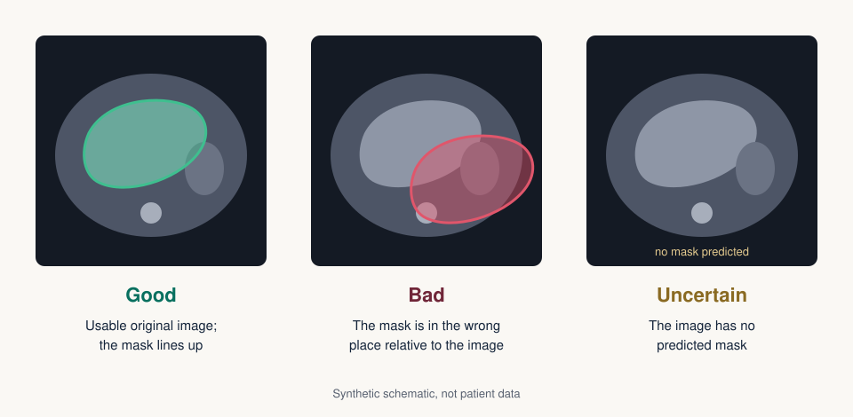
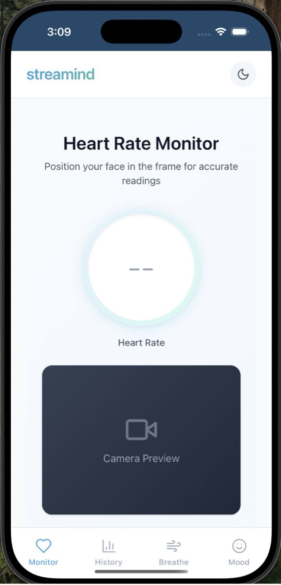
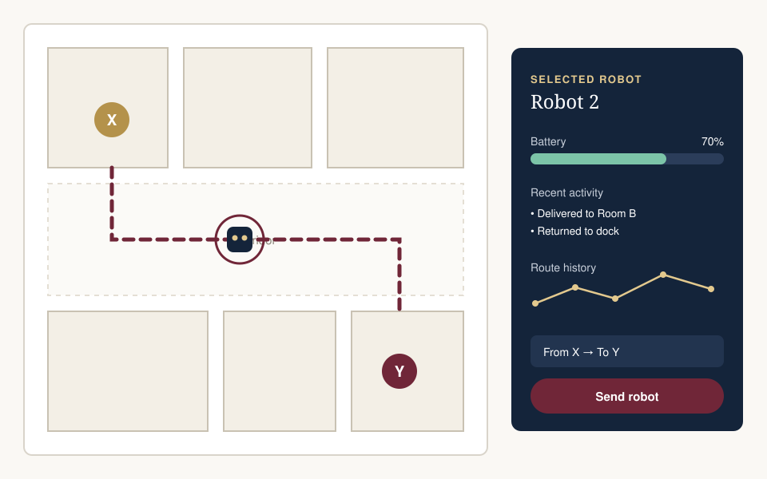

All experience
Five roles, each linked to a case study with the problem, contribution, evidence, and next steps.
 IllustrationUC Berkeley Center for Teaching & LearningUndergraduate Research AssistantOctober 2026 – presentI turn student and educator feedback about AI into themes, research questions, and recommendations, including public work tied to California Education Learning Lab.Read case study →
IllustrationUC Berkeley Center for Teaching & LearningUndergraduate Research AssistantOctober 2026 – presentI turn student and educator feedback about AI into themes, research questions, and recommendations, including public work tied to California Education Learning Lab.Read case study →
IllustrationUCSF RadiologyMachine Learning InternMay 2026 – presentI train MRI image-quality and liver-segmentation models, then review failure cases to improve labels and testing.Read case study →
ScreenshotStreamind HealthSoftware Engineer InternOctober 2025 – May 2026I moved camera-based pulse capture toward iOS and tested facial regions, RGB signals, and CHROM.Read case study →
IllustrationCTRL RoboticsSoftware Engineer InternJanuary – May 2026I translated operator needs into requirements and rebuilt the robot map and navigation workflow.Read case study → ScreenshotComputational Biology at BerkeleyInternal Vice PresidentSeptember 2025 – presentI lead recruitment, onboarding, and internal operations across project managers, officers, and committees.Read case study →
ScreenshotComputational Biology at BerkeleyInternal Vice PresidentSeptember 2025 – presentI lead recruitment, onboarding, and internal operations across project managers, officers, and committees.Read case study →